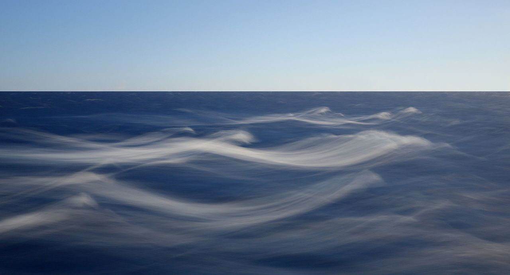

Ingeniør- og
Informatikkordliste
på Bokmål
Here are collected the most relevant IT and engineering words translated to Norwegian (Bokmål).
Each word is associated with IPA, International Phonetic Alphabet, transcription. It helps the reader to pronounciate and so comprehend correctly the words.
Each word is associated with IPA, International Phonetic Alphabet, transcription. It helps the reader to pronounciate and so comprehend correctly the words.
Her det finnes de mest relevante informatikk- og ingeniørordene oversatt til norsk (bokmål).
Hvert ord er assosiert med IPA, Internasjonalt Fonetisk Alfabet, transkripsjon. Det hjelper leseren til å uttale og dermed forstå ordene riktig.
Hvert ord er assosiert med IPA, Internasjonalt Fonetisk Alfabet, transkripsjon. Det hjelper leseren til å uttale og dermed forstå ordene riktig.

This photo was taken by © Chell Hill, some rights reserved.

This photo was taken by © Martin Falbisoner, some rights reserved.